Recent Accomplishments
New Featured Video for SWAP (Sharing With A Purpose)
April 2, 2026
SWAP is a research initiative that helps nonprofits share idle resources to amplify their collective impact. SWAP uses auction-based mechanism and integer optimization to find the highest-value exchanges across many organizations at once. The video documents SWAP in action, with nonprofit users describing the resources, connections, and outcomes the platform has enabled. This work is led by the talented Dr. Weixiao Huang and many academic and nonprofit collaborators.
Watch the Video
New Appointment at RPI
Joining RPI as the Frank and Lillian Gilbreth Endowed Chair in Industrial and Systems Engineering
March 16, 2026
On March 16, 2026, I began as the Frank and Lillian Gilbreth Endowed Chair in Industrial and Systems Engineering at Rensselaer Polytechnic Institute. I am grateful for the opportunity to build on research at the intersection of mathematical optimization, machine learning, and decision support for societal impact. RPI's commitment to advancing science and engineering in service of major societal challenges aligns strongly with the kind of work I hope to grow in this next chapter.
Read More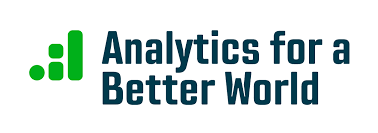
Recent SWAP-and-Route Webinar at Analytics for a Better World
Fast Resource Exchange and Collaborative Routing for NPOs
March 3, 2026
I was honored to present the inaugural ABW Research Webinar Series with a presentation on SWAP-and-Route. My presentation focused on how nonprofit resource exchange and collaborative routing can be coordinated under tight time horizons in emergency settings. This work is led by talented students Özge Aygül and Yasutora Ito, as well as colleague Jennifer Pazour. Many thanks to Professor Dick den Hertog and the Analytics for a Better World team for creating a global platform for analytics in service of mission-driven organizations.
Event Page
Return Visit to Pitt
Sustainability Capstone and Industrial Engineering Seminar
February 26, 2026
It was a pleasure to return to the University of Pittsburgh, where I earned my PhD in Industrial Engineering, for a visit that included both the Sustainability Capstone course and the Industrial Engineering graduate seminar. In the seminar, I spoke on SWAP-and-Route and how analytics can support rapid nonprofit coordination in emergency response. Returning as an alumnus made the visit especially meaningful, and I appreciated the chance to engage with students thinking carefully about sustainability, systems, and impact.
IE Seminar Details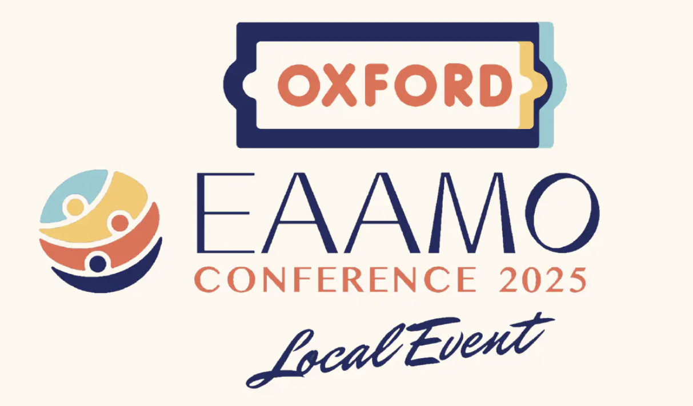
Recent Talk at EAAMO Local | Oxford
From Auction to Delivery: Fast Resource Exchange and Collaborative Routing with SWAP-and-Route
November 6, 2025
I presented our work on SWAP-and-Route at EAAMO Local at the University of Oxford in Oxford, UK. This research connects combinatorial exchange and collaborative routing to help nonprofits respond more quickly and collectively when emergency needs arise. I am grateful to coauthors Özge Aygül, Yasutora Ito, and Jennifer Pazour, and to the EAAMO community for creating space for rigorous, impact-oriented work. Many thanks also to Alex Teytelboym for extending the invitation and Edwin Lock for hosting.
Conference Page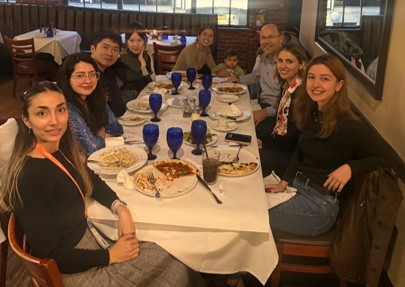
INFORMS Annual Meeting in Atlanta, Georgia
Always Great to See Colleagues
October 25-28, 2025
I was glad to join colleagues, students, and collaborators at the 2025 INFORMS Annual Meeting in Atlanta. From methodological advances to high-impact applications, INFORMS continues to be the leading venue where the OR/MS field shows its technical depth and practical reach. I am grateful for the conversations, the ideas, and the many chances to reconnect with people helping move the discipline forward.
Meeting Website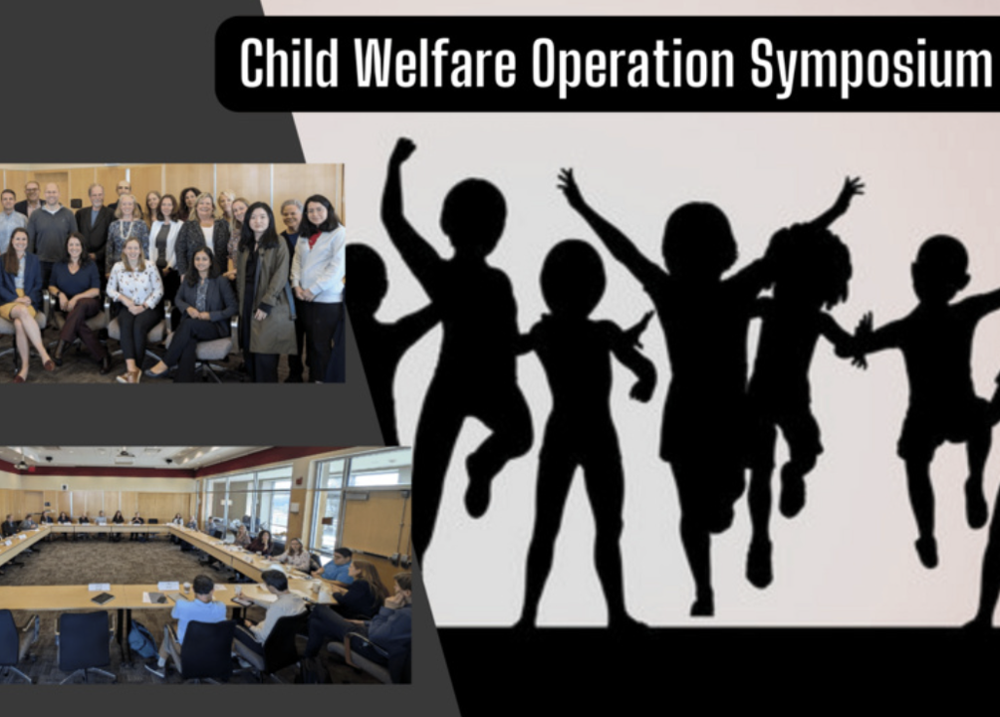
Child Welfare Operations Symposium
Hosted at Cornell University
October 13, 2025
It was a pleasure to continue the Child Welfare Operations Symposium at Cornell as part of a growing community of researchers and practitioners in this space. The symposium brought together people working on how analytics and operations thinking can support child welfare systems facing complex and evolving needs. I continue to believe this area offers major opportunities for rigorous analytics, intentional system design, and close partnership with practitioners.
Event Page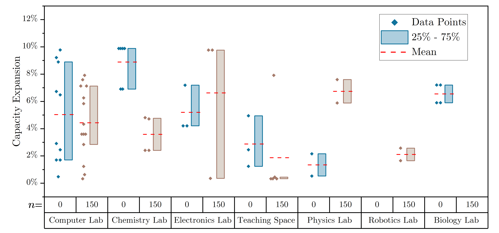
New Paper Appearing at Omega
A Predict-and-Prescribe Framework for Dynamic Course Scheduling Toward Strategic University Scaling
August 6, 2025
Our paper A Predict-and-Prescribe Framework for Dynamic Course Scheduling Toward Strategic University Scaling with Özge Aygül, Teodor Hellgren, and Shima Azizi now appears at Omega. This work connects predictive modeling and prescriptive optimization to support strategic, scalable course planning, while keeping the overall decision process transparent and operationally grounded.
Read More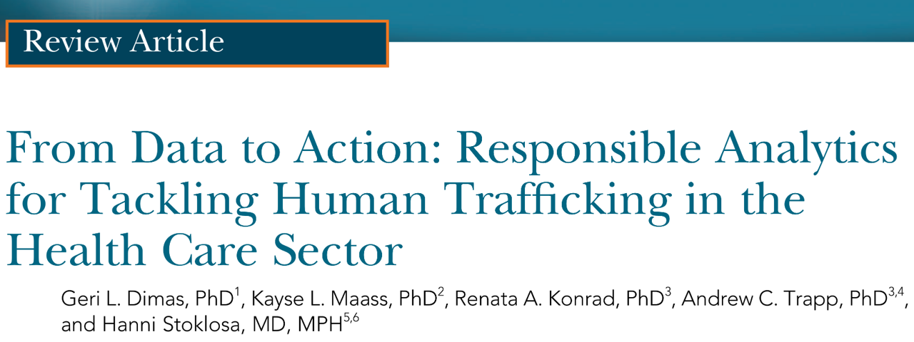
New Journal Paper at Journal of Forensic Nursing
From Data to Action: Responsible Analytics for Tackling Human Trafficking in the Health Care Sector
July 1, 2025
Our paper From Data to Action: Responsible Analytics for Tackling Human Trafficking in the Health Care Sector with Geri L. Dimas, Kayse L. Maass, Renata A. Konrad, and Hanni M. Stoklosa now appears at Journal of Forensic Nursing. The paper surveys responsible analytics and discusses practical, decision-relevant ways that data can support efforts to recognize and respond to trafficking in the health care sector.
Read More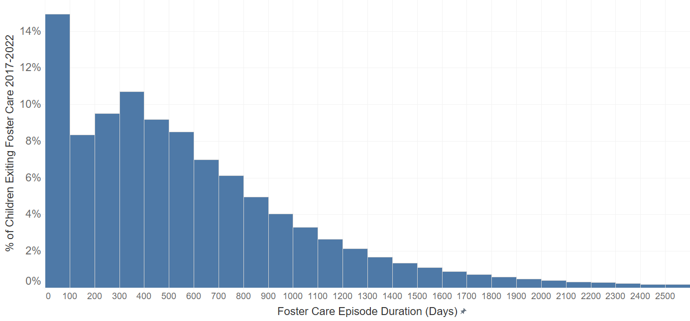
New Book Chapter (Springer)
Child Welfare Services in the United States: An Operations Research Perspective
March 29, 2025
Our book chapter Child Welfare Services in the United States: An Operations Research Perspective with Vincent W. Slaugh, Ludwig Dierks, Alan Scheller-Wolf, and M. Utku Ünver appears in a Springer Nature volume on nonprofit operations and supply chain management, edited by the excellent Gemma Berenguer and Milind G. Sohoni. Our chapter situates child welfare as a domain where optimization, analytics, and intentional system design can strengthen planning, transparency, and performance measurement.
Read More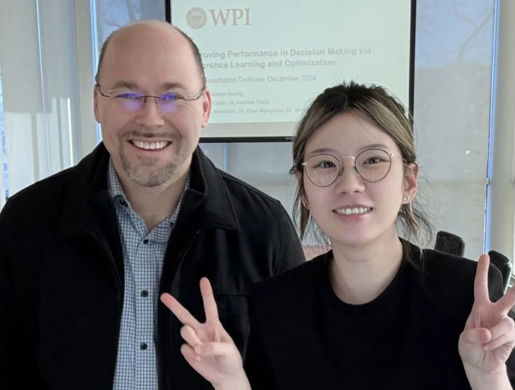
Congratulations to Our Newest PhD: Dr. Weixiao Huang
December 9, 2024
Dr. Weixiao Huang successfully defended her PhD dissertation entitled Improving Performance in Decision Making via Preference Learning and Optimization. Her research advances decision science by integrating data-driven preference learning with optimization techniques, improving real-world systems across multiple domains. Many thanks to Weixiao's dissertation committee members Dr. Oren Mangoubi, Dr. Jennifer A. Pazour, and Dr. Alexander Teytelboym for their guidance and contributions. Congratulations, Weixiao! We are excited to see your research continue to advance.
Read More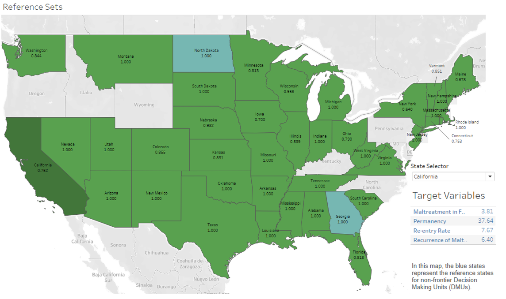
New Manuscript at Socio-Economic Planning Sciences
Performance Evaluation of Child Welfare Departments Using Data Envelopment Analysis: A Comparative Study across US States
November 7, 2024
Our paper Performance Evaluation of Child Welfare Departments Using Data Envelopment Analysis: A Comparative Study across US States with Sepideh Sedghi, Shima Azizi, Katherine Canada, and Charles Vincent now appears at Socio-Economic Planning Sciences. This study uses Data Envelopment Analysis (DEA) to evaluate how well US child welfare agencies are performing. By analyzing statewide data from the Child and Family Services Review (CFSR) and clustering agencies based on family support policies, we identify best practices. Our results offer guidance for child welfare agencies working to improve safety and stability for children.
Read More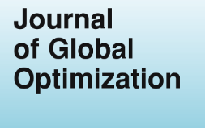
New Manuscript at Journal of Global Optimization
Solving a Class of Two-Stage Stochastic Nonlinear Integer Programs Using Value Functions
September 24, 2024
Our paper Solving a Class of Two-Stage Stochastic Nonlinear Integer Programs Using Value Functions with Junlong Zhang, and Osman Özaltın now appears at the Journal of Global Optimization. This study develops solution methods for two-stage nonconvex integer programs with stochastic right-hand sides. We leverage a level-set characterization of the value function and solve some of the largest stochastic quadratic integer programs to date, including complex assignment and quadratic integer programs. Great to see a first of hopefully many publications with Osman and Junlong!
Read More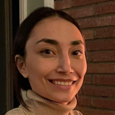
New NSF INTERN Award!
August 31, 2024
As a supplement to our existing NSF RAPID award, with excellent colleague Sarah Stanlick (co-PI), I am proud to announce that ARCHES PhD student Fatemeh Farajzadeh has secured a 6-month NSF INTERN award. In partnership with WelcomeNST, the largest convener of neighborhood support teams in the US, this award will further support pre-arrival and post-arrival data collection for refugees that have been relocated to the United States through the pathway of humanitarian parole. The original NSF RAPID award is "RAPID: Data Collection for Designing Refugee Matching Systems," research award CMMI-2233377.
Read MoreNew NSF CIVIC Track B Award!
August 29, 2024
In parallel with our existing NSF award on sharing nonprofit resources through SWAP, I am co-PI on a new NSF CIVIC-PG Track B award led by excellent colleague Sarah Stanlick (PI) as well as Yunus Telliel (co-PI). This work will bring the innovation that is SWAP for facilitating resource sharing among nonprofits to emergency response contexts where urgent needs exist that quickly require addressing. We believe SWAP has great potential in this context. The original NSF RAPID award is "Collaborative Research: FW-HTF-R: Mobilizing Nonprofit Resources and Talents with a Community Tool for Purpose-Driven Work," research award CMMI-2222713.
Read MoreSabbatical Has Arrived!
August 14, 2024
I was granted sabbatical for the 2024-2025 academic year. It was effective July 1, 2024 and I've just been having too much fun traveling this past month. I've been keeping active with research and also more time with family and some side work as well. Drop me a line if you'd like to connect! Would love to hear from you.
Dynamic Placement in Refugee Resettlement, appearing in
Research Highlights of the Communications of the ACM
March 24, 2024
A version of our paper Dynamic Placement in Refugee Resettlement with Narges Ahani, Paul Gölz, Ariel Procaccia, and Alex Teytelboym was just published in the Research Highlights of the Communications of the ACM. We introduce a dynamic allocation mechanism based on stochastic programming that accounts for the value of future slots of capacity to inform resettlement decisions. The approach recovers over 99% of the hindsight optimal allocation as in Placement Optimization in Refugee Resettlement, and is used by HIAS, a leading American refugee resettlement agency. We are grateful to the National Science Foundation Operations Engineering program for their support (award number 1825348).
The link to the technical perspective (kindly written by Dr. Daniel Freund) is here, and the research paper is here. Enjoy reading!
Read MoreI Made Full Professor :)
February 23, 2024
I was promoted to Full Professor at Worcester Polytechnic Institute, effective July 1, 2024. This is a great honor for me, I have been very fortunate to collaborate with so many talented individuals. I am also pursuing sabbatical for the 2024-2025 academic year. Drop me a line if you'd like to connect! Would love to hear from you.
WPI Promotion Announcements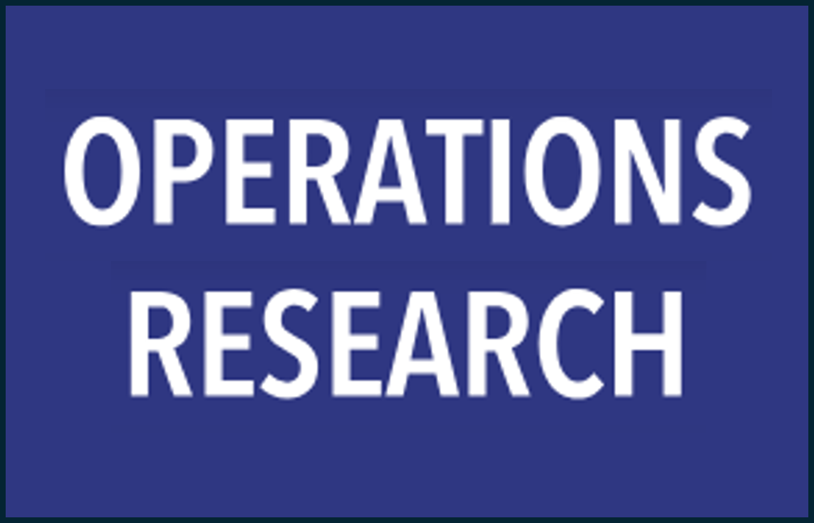
Associate Editor at Operations Research: Societal Impact
January 1, 2024
It was my honor, and a career highlight, to accept an invitation to join the editorial board of Operations Research, the first elite journal in which I published my 2013 work On a Level-Set Characterization of the Value Function of an Integer Program and Its Application to Stochastic Programming that develops the idea of level-set minimal vectors, leveraging results from integer programming duality, to solve larger two-stage stochastic integer programs. We devised innovative algorithmic ideas including global branch and bound to solve problems orders of magnitude larger than in the literature. Two of my more recent works also appear at OR: Placement Optimization in Refugee Resettlement and Dynamic Placement in Refugee Resettlement. I invite those interested to consider submitting to the new Societal Impact area that emphasizes papers on significant societal decisions, advocating for innovative, data-driven analyses in fields like health care and sustainability, and valuing collaborations beyond the OR community to generate impactful insights.
View Editorial Board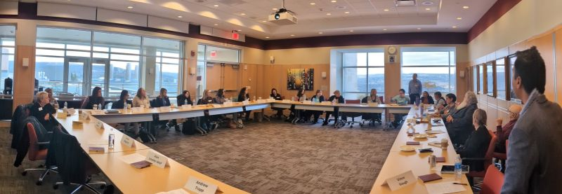
Child Welfare Operations Symposium at Cornell University
November 9, 2023
It was a great honor to co-organize the inaugural Child Welfare Operations Symposium in Ithaca, NY on November 9, 2023. I joined co-organizers Dr. Vince Slaugh and Dr. Alan Scheller-Wolf and a host of incredible practitioners at the one-day event. The day was filled with great discussions on the challenges that child welfare practitioners face at the strategic, operational and tactical levels, as well as what academics can offer to improve real-world operations. Here is a video of us three co-organizers discussing the results of the symposium, as well as some practitioners commenting on the day's events.
Watch Video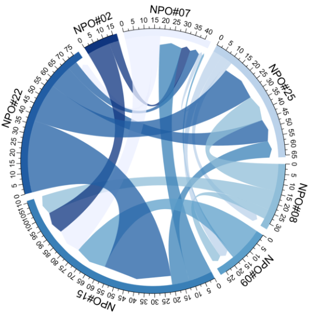
New Manuscript at ACM EAAMO 2023!
SWAP for Optimizing Nonprofit Resource Sharing
October 30, 2023
I am delighted to share that our latest manuscript on enabling nonprofit organizations to share resources with multilateral combinatorial exchange via our SWAP platform, has been accepted at ACM EAAMO 2023 and invited for oral presentation. Amazing PhD student Weixiao Huang and MS student Elise Deshusses, along with with excellent colleagues Jen Pazour, Yunus Telliel, and Sarah Stanlick made this happen. While designing theory and methods is very exciting, just as exciting is the real-world deployment of SWAP to move from competition to sharing and greater collective impact. This is funded through an NSF (FW-HTF) award "Collaborative Research: FW-HTF-R: Mobilizing Nonprofit Resources and Talents with a Community Tool for Purpose-Driven Work," FW-HTF-2222713.
Download Preprint
New Manuscript at ACM EAAMO 2023!
Optimizing Sponsored Humanitarian Parole
October 30, 2023
Together with amazing collaborators Alex Teytelboym and WPI Data Science students Ryan Killea and Fatemeh Farajzadeh, and in partnership with HIAS, we introduce RUTH: Refugees Uniting Through HIAS. RUTH is a new software platform that, in the context of humanitarian parole with sponsorship, elicits preferences of Ukrainians displaced by the war, and then uses intentionally designed algorithms to recommend welcoming community sponsors throughout the United States that honor the expressed preferences of refugees. This is funded in part through an NSF CMMI award "RAPID: Data Collection for Designing Refugee Matching Systems," CMMI-2233377.
Download preprint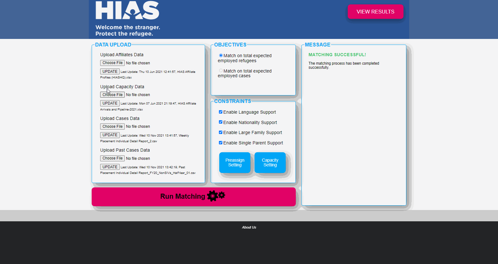
New Manuscript at Operations Research
Dynamic Placement in Refugee Resettlement
September 28, 2023
Our paper Dynamic Placement in Refugee Resettlement with Narges Ahani, Paul Gölz, Ariel Procaccia, and Alex Teytelboym now appears at Operations Research. We introduce a dynamic allocation mechanism based on stochastic programming that accounts for the value of future slots of capacity to inform resettlement decisions. The approach recovers over 99% of the hindsight optimal allocation as in Placement Optimization in Refugee Resettlement, and is used by HIAS, a leading American refugee resettlement agency. We are grateful to the National Science Foundation Operations Engineering program for their support (award number 1825348).
A link to a preprint is here. Enjoy reading!
Read MoreRecent Conference Innovations in Immigration Analytics
July 2, 2023
On June 2, 2023 WPI hosted the Innovations in Immigration Analytics Conference, co-chaired by Geri L. Dimas and Daniel Reichman. Over 80 persons attended to learn of how advanced analytics, intentionally designed, can positively affect areas of immigration including migration, refugee causes, and asylum.
Read More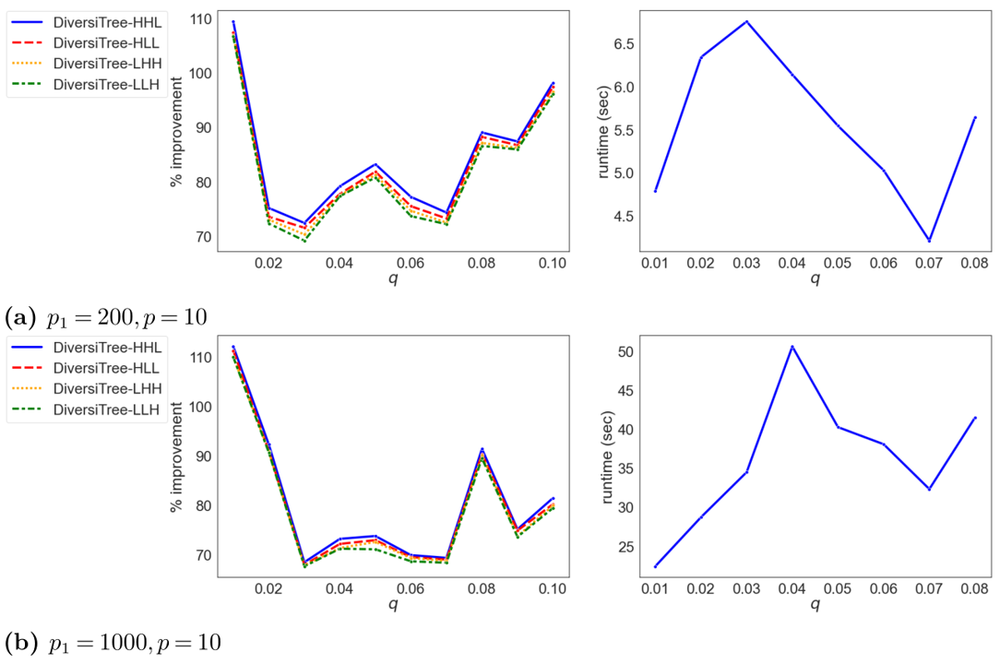
New Manuscript at INFORMS Journal on Computing
On Efficiently Computing Diverse Sets of Near-Optimal Solutions to Mixed-Integer Optimization Problems
June 29, 2023
Our paper DiversiTree: A New Method to Efficiently Compute Diverse Sets of Near-Optimal Solutions to Mixed-Integer Optimization Problems with Izuwa Ahanor and Hugh Medal has been accepted at INFORMS Journal on Computing. We develop a new method for mixed-integer programs that emphasizes diversity in near-optimal solutions. Compared to existing methods, our approach significantly increases solution set diversity without sacrificing runtime. Our methods can be easily integrated into integer programming solvers to enhance solution diversity.
Download Preprint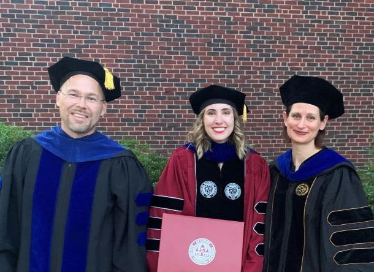
Congratulations to Our Newest PhD: Dr. Geri Louise Dimas
May 1, 2023
Dr. Geri Louise Dimas successfully defended her PhD dissertation entitled Data Science for Improving Operations in Organizations that Serve Vulnerable Populations. Her research applies advanced data science and operations research techniques to enhance decision-making in critical areas, with a particular focus on anti-human trafficking and immigration system analytics. Many thanks to Geri's dissertation committee members Dr. Renata A. Konrad (Co-Advisor), Dr. Daniel Reichman, and Dr. Kayse Lee Maass for their guidance and contributions. Congratulations, Geri! We are proud of your achievements and excited for the impact your work will have.
Read More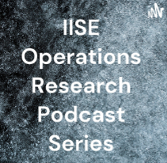
New Podcast! IISE OR for Social Good
March 30, 2023
I had the pleasure of joining Dr. Yongjia Song of Clemson University and Dr. Karmel Shehadeh of Lehigh University for a recent IISE OR for Social Good podcast to discuss my work in using operations research and analytics to benefit vulnerable populations. It's a great honor to work with many dedicated and talented collaborators, including amazing students here at Worcester Polytechnic Institute, to advance these causes together, and I am grateful to have the opportunity to amplify their efforts. I hope you get a chance to listen in, and that together we can continue to build a brighter future.
Listen!CNN: Irish immigrant Annie Moore first to arrive on Ellis Island
March 17, 2023
Was proud to see the shout out on our refugee resettlement work on CNN! Annie™ MOORE is our refugee resettlement software named after the Irish woman Annie Moore from the late 1800s, who was the first immigrant to arrive on Ellis Island. Annie™ is developed for and used by HIAS, a leading American refugee resettlement agency, to resettle refugees in the United States. Grateful to the National Science Foundation Operations Engineering program for their support (award number 1825348).
Read online
INFORMS Interview
Outgoing President of PSOR
February 16, 2023
INFORMS interviewed me as the outgoing president of the INFORMS PSOR section. As I am passionate about improving outcomes for vulnerable populations and I shared about the wide range of public sector applications at PSOR. From combatting human trafficking to tackling governmental challenges and public health issues, PSOR has many impactful activities in using operations research and analytics for societal benefit.
Watch Clip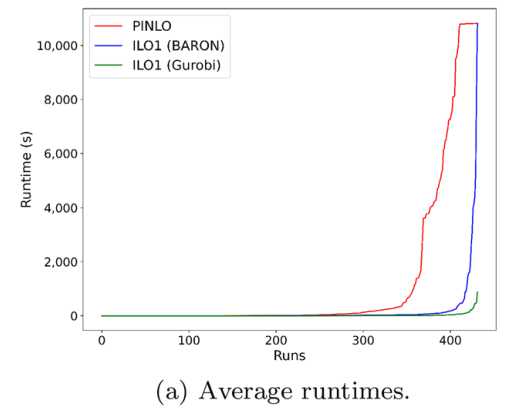
New Manuscript at Optimization Letters
A Reformulation Technique to Linearize A Class of Polynomial Functions of Bounded Integer Variables
January 30, 2023
Congratulations to my outstanding colleague and former student Pitchaya Wiratchotisatian for her great work on our joint manuscript "A Reformulation Technique to Linearize A Class of Polynomial Functions of Bounded Integer Variables". We present a mathematical reformulation technique that linearizes polynomial functions of integer variables of any degree, and shows through computational experiments that it is effective in solving large integer optimization problems, indicating its potential for real-world applications.
A link to a preprint is here. Enjoy reading!
Read More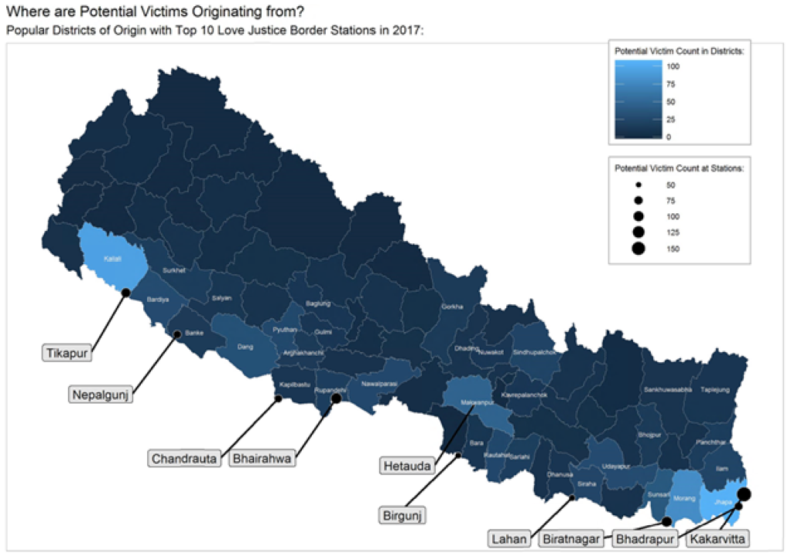
New Manuscript at INFORMS Journal on Applied Analytics
Estimating Effectiveness of Identifying Human Trafficking via Data Envelopment Analysis
December 21, 2022
Congratulations to my outstanding colleagues, including WPI Data Science PhD candidate Geri L. Dimas, former WPI Industrial Engineering student Malak El Khalkhali, former Northeastern Industrial Engineering student Alex Bender, Northeastern Assistant Professor Kayse Lee Maass, WPI Associate Professor Renata A. Konrad, domain expert Jeff Blom, and WPI Professor Joe Zhu on our manuscript "Estimating Effectiveness of Identifying Human Trafficking via Data Envelopment Analysis". The article discusses the first application of data envelopment analysis (DEA) to evaluate the performance of transit monitoring stations at intercepting potential human-trafficking victims along the Nepal-India border, and recommends specific operational improvements based on our evaluation of station performance.
A link to a preprint is here. Enjoy reading!
Read at IJAA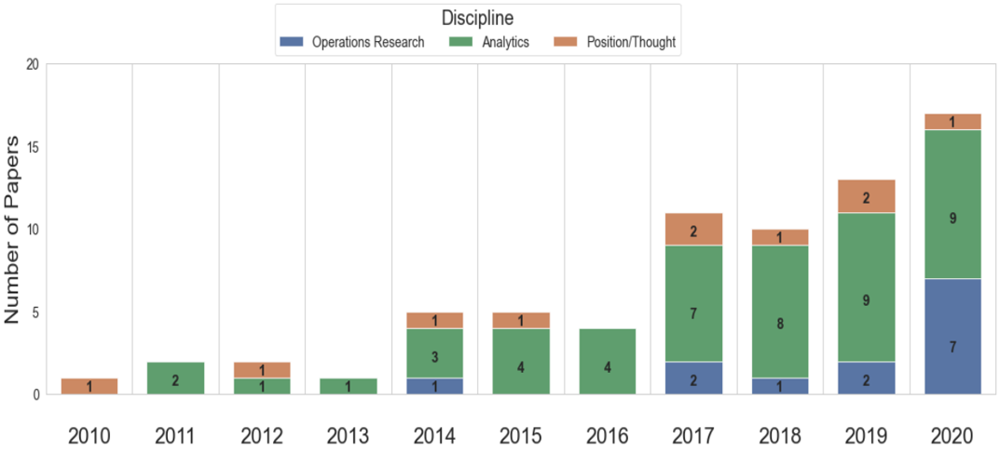
New Manuscript at European Journal of Operational Research
Perspectives on How to Conduct Responsible Anti-Human Trafficking Research in Operations and Analytics
December 19, 2022
Congratulations to my outstanding colleagues, including WPI Associate Professor Renata A. Konrad, joint with Northeastern Assistant Professor Kayse Lee Maass, and WPI Data Science PhD candidate Geri L. Dimas, on our next manuscript "Perspectives on How to Conduct Responsible Anti-Human Trafficking Research in Operations and Analytics". Here we showcase Operations Research and Analytics can aid in combating human trafficking, with insights divided into three categories: representation of trafficking, survivor and community considerations, and analytics.
A link to a preprint is here. Enjoy reading!
Read MoreNew Algorithm for Preference-Based Matching for Ukrainian Refugees to US Communities
December 15, 2022
Together with amazing collaborators Alex Teytelboym and WPI Data Science students Ryan Killea and Fatemeh Farajzadeh, and in partnership with HIAS, we introduce RUTH: Refugees Uniting Through HIAS. RUTH is a new software platform that elicits preferences of Ukrainians displaced by the war, and then uses intentionally designed algorithms to recommend welcoming communities throughout the United States that honor the expressed preferences of refugees.
Read More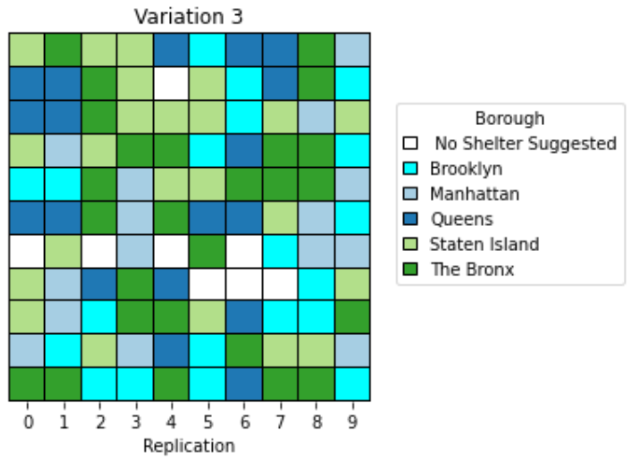
New Manuscript on arXiv:
On the Optimization of Benefit to Cost Ratios for Public Sector Decision Making
December 8, 2022
We develop a new algorithmic framework for public sector decision making, joint with outstanding WPI undergraduate Frederick "Forrest" Miller, Northeastern IE PhD candidate Yaren Kaya, WPI Data Science PhD candidate Geri L. Dimas, Dr. Kayse Lee Maass, and Dr. Renata A. Konrad. Our framework optimizes the benefit to cost ratio of decision problems, exemplified through the challenge of expanding capacity for NYC's runaway and homeless youth shelter system, resulting in optimal marginal deployments of capacity that are both low-cost and efficient, and has potential for use in other public sector challenges.
Read More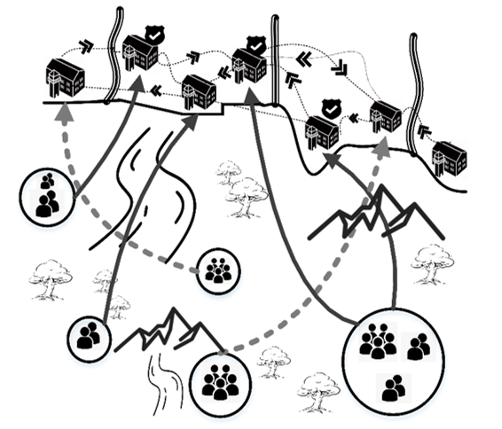
New Manuscript at Encyclopedia of Optimization
Optimization for Secure and Humane Border Operations
September 30, 2022
Way to go, Fatemeh Farajzadeh on our first joint manuscript "Optimization for Secure and Humane Border Operations". Here we explore that large migrant movements worldwide create complex humanitarian crises at national borders, and outline how advanced analytics and optimization techniques can be used to address common operational challenges and improve both security and humanitarian aspects of border operations.
A link to a preprint is here. Enjoy reading!
Read More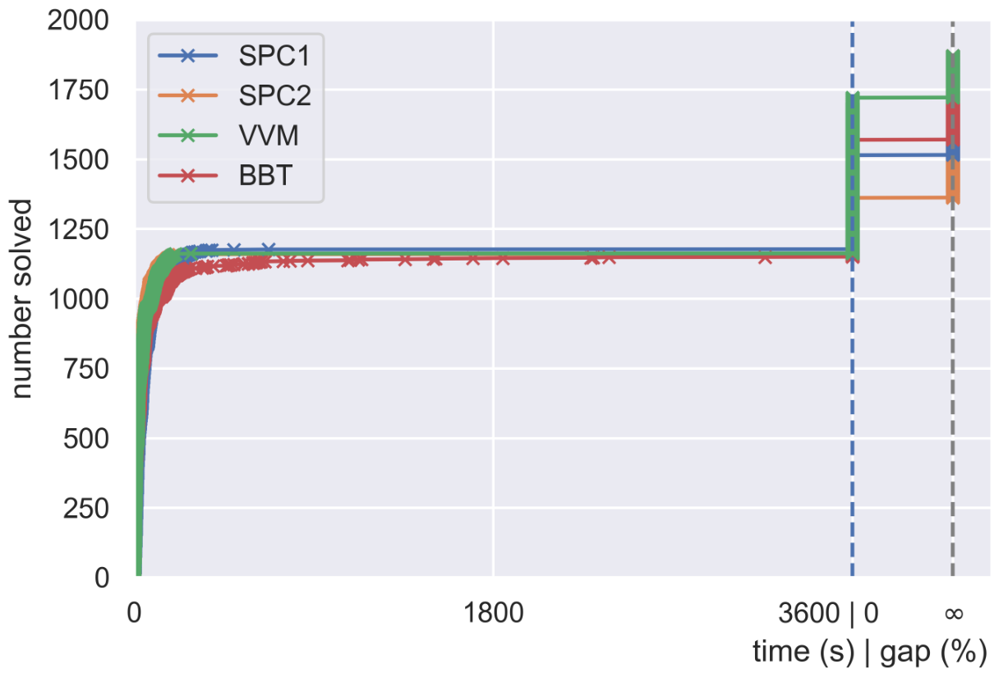
New Manuscript at IJOC!
Stability Representations of Many-to-One Matching Problems: An Integer Optimization Approach
September 30, 2022
Super proud of the hard work and dedication of Dr. Pitchaya Wiratchotisatian on her most recent manuscript "Stability Representations of Many-to-One Matching Problems An Integer Optimization Approach", together with sharp colleague Dr. Hoda Atef Yekta. Here we explore novel representations for stability in solving stable many-to-one matching problems, including the construction of cohorts.
A link to a preprint is here, and a link to the INFORMS Journal on Computing version is here. Enjoy the read!
Read More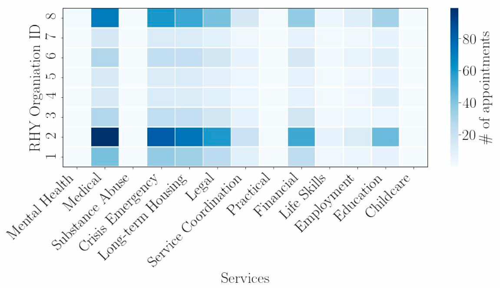
New Manuscript! IISE Transactions
Improving Access to Services for Runaway Youth in New York City
September 02, 2022
A recent manuscript has been accepted at IISE Transactions on how to project the collective capacity required by service providers to adequately meet the needs of RHY in NYC. This project was led from beginning to end by outstanding Northeastern Industrial Engineering PhD candidate Yaren Bilge Kaya, and joint with Northeastern Assistant Professor Kayse Lee Maass, WPI Data Science PhD candidate Geri L. Dimas, WPI Associate Professor Renata A. Konrad, and NYU Research Professor Meredith Dank.
A link to a preprint is here, and a link to the IISE Transactions version is here.
Read PreprintNew NSF RAPID Award!
August 31, 2022
I am PI on a new NSF RAPID award, with excellent colleague Sarah Stanlick (co-PI). This award will support pre-arrival and post-arrival data collection for refugees that have been relocated to the United States through the pathway of humanitarian parole. There is great potential for this data to inform context-appropriate matching systems to better serve needs. This is NSF RAPID award "RAPID: Data Collection for Designing Refugee Matching Systems," research award CMMI-2233377.
Read More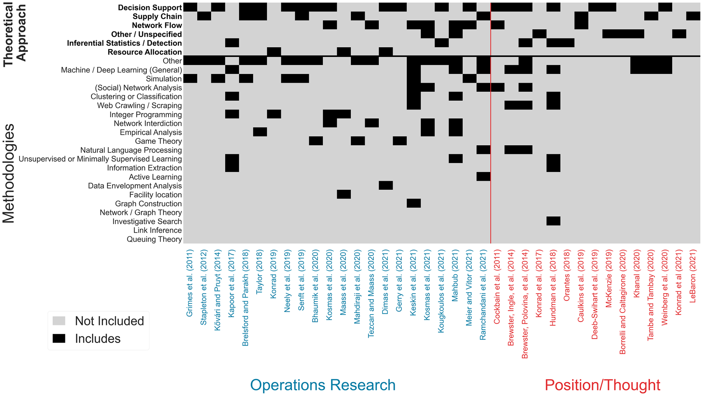
New Manuscript! PLOS One
OR and Analytics to Combat Trafficking: Extensive Lit Review
August 29, 2022
A recent manuscript has been accepted at PLOS One that classifies the body of Operations Research and Analytics research related to the anti-human trafficking domain. It was led from start to finish by amazing WPI Data Science PhD candidate Geri L. Dimas, and joint with WPI Associate Professor Renata A. Konrad, and Northeastern Assistant Professor Kayse Lee Maass. We are grateful to the thoughtful comments of the editorial team that improved the paper, as well as National Science Foundation Operations Engineering program for their support of this research (award number 1841893 and1935602).
A link to a preprint is here, and a link to the PLOS One version is here.
Read full version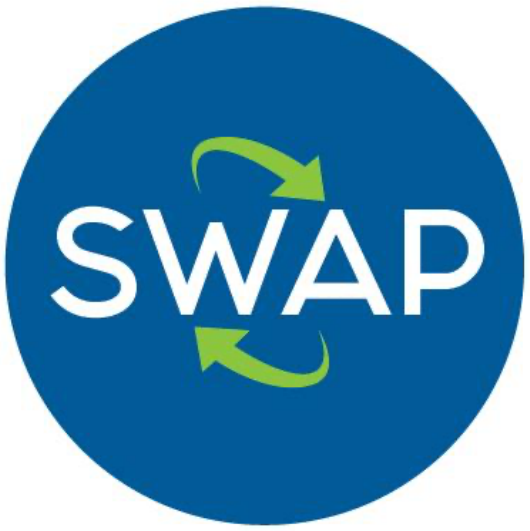
New NSF Award! Nonprofit Resource Sharing
August 11, 2022
I am PI on a new NSF Future of Work award! We will use combinatorial optimization to exchange resources among participating nonprofit organizations to maximize total surplus value. This is with excellent colleagues: Jen Pazour (PI, RPI), Yunus Telliel (co-PI), and Sarah Stanlick (co-PI). This award is my largest thus far and lasts four years. While the anticipated theoretical and methodological contributions are exciting, just as exciting is the expected shaping of the nonprofit ecosystems to move from competing to sharing and empowering. This is NSF (FW-HTF) award "Collaborative Research: FW-HTF-R: Mobilizing Nonprofit Resources and Talents with a Community Tool for Purpose-Driven Work," award FW-HTF-2222713.
Read More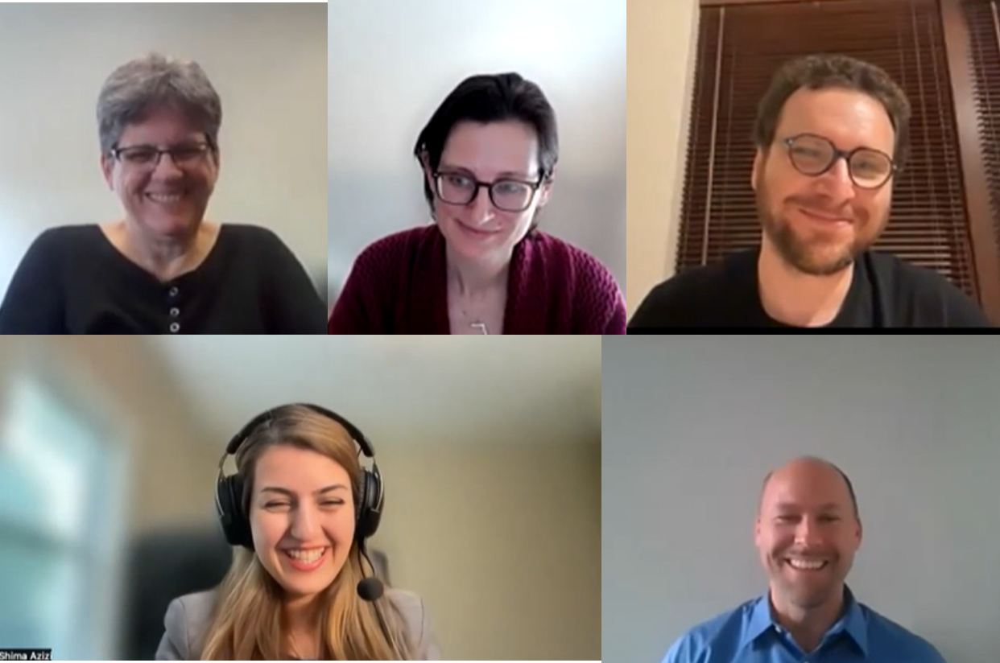
Newly Minted PhD:
Introducing Dr. Shima Azizi
May 3, 2022
Dr. Shima Azizi successfully defended her PhD dissertation entitled Mixed Integer Linear and Nonlinear Optimization for Disadvantaged Populations with Accents of Fairness and Balance focusing on the application of advanced integer linear and nonlinear optimization to improve outcomes for disadvantaged populations such as high needs emergency room utilizers, refugees, and foster care children. Many thanks to Shima's committee members Dr. Renata Konrad, Dr. Sharon Johnson, and Dr. Erhun Kundakcıoğlu for their consideration and contributions. Congrats, Shima! We are very glad that you have had a successful conclusion of this chapter of your career. We from the WPI community wish you the very best in your next steps! You have a bright future ahead of you.
Read More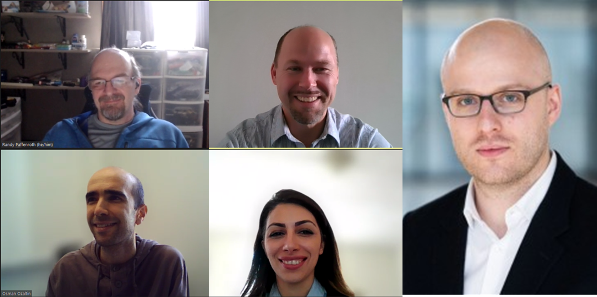
Newly Minted PhD:
Introducing Dr. Narges Ahani
April 29, 2022
Dr. Narges Ahani successfully defended her PhD dissertation entitled Analytics for Refugee Resettlement and focusing on the application of advanced analytics, including machine learning and integer optimization, to improve refugee outcomes. We are grateful for committee members Dr. Randy Paffenroth, Dr. Osman Özaltın, and Dr. Alexander Teytelboym for their time and energy. We also thank the National Science Foundation (NSF) (Operations Engineering) grant CMMI-1825348, and others for supporting Narges on her journey. Congrats, Narges! We wish you well on the next chapter of your career! You have a bright and impactful career ahead.
Read More
New INFORMS Audio Interview on YouTube
My Thoughts on the Ukrainian Refugee Crisis
April 25, 2022
I was interviewed by INFORMS on the Ukrainian refugee crisis. As of late April 2022 there are over 5 millions refugees and 13 million displaced peoples in Ukraine. I shared thoughts on how intentional use of operations research and data science technologies like Annie™ MOORE can help with such crises.
Listen!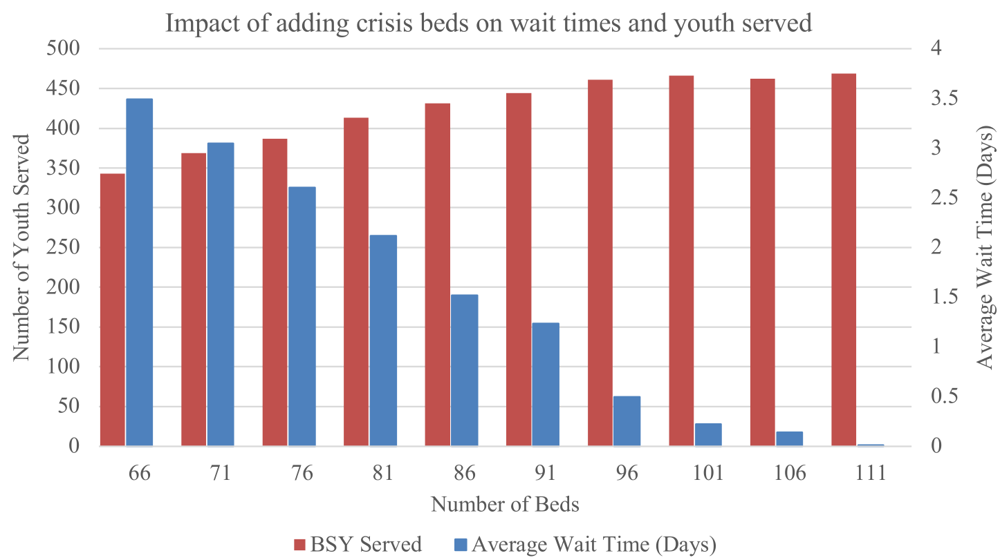
New Manuscript!
Simulation to Analyze NYC Shelter Capacity
April 23, 2022
This is a new manuscript with excellent coauthors Sophia Mantell, Yaren Bilge Kaya, Kayse Lee Maass, Renata Konrad, Geri L. Dimas, and Meredith Dank on the use of discrete event simulation to investigate runaway and homeless youth shelters and associated capacity shortages. We consider a realistic shelter setting in New York City and study various capacity interventions to alleviate resource scarcity.
Read More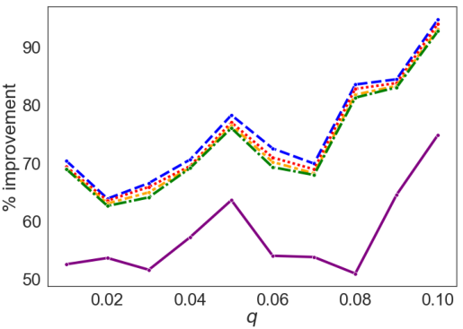
New Manuscript!
DiversiTREE for finding diverse near-optima
April 8, 2022
This is a new manuscript with excellent coauthors Izuwa Ahanor and Hugh Medal from the University of Tennessee, Knoxville. We introduce diversity metrics into the node selection rules of branch-and-bound algorithms to improve the diversity of encountered high-quality solutions. The collected sets of high-quality solutions exhibit higher levels of diversity than comparable approaches.
Read More
Recent Talk
Penn State University, IME Department Seminar
March 29, 2022
I had the honor of giving an invited talk at the Industrial and Manufacturing Engineering departmental colloquium this spring at Penn State University. The topic of the talk was on risk-averse refugee resettlement. It was a great visit! Many thanks to Dr. Jose Ventura and Dr. Saurabh Bansal for the invitation, and James Wyland for his kind assistance with accommodations.
Read More
New Manuscript!
Optimization for Secure and Humane Border Operations
January 26, 2022
WPI Data Science PhD student Fatemeh Farajzadeh and I coauthored this technical report. Tens of millions of individuals experiencing forced migration call for operations research and analytics researchers to attend to optimization challenges along the borderlands of nations. Guided by dual humanitarian and security purposes, in this short review we outline key borderland operations challenges and propose avenues for future research to proactively mitigate such challenges. We are grateful for the support of the National Science Foundation (Operations Engineering) grant CMMI-1825348.
Read More
New Manuscript!
Human-Centric Decision Support Tools: Insights from Real-World Design and Implementation
November 10, 2021
WPI Data Science PhD student Narges Ahani and I coauthored this technical report on designing human-centric decision support systems, the thinking that underscores the design of Annie™ MOORE, the world's first refugee resettlement software. Our premise: while outstanding technology and knowledge exists to solve real-world decision optimization and analytics challenges, only by having a deep understanding of the problem at hand via mutual trust from the stakeholders, is it possible to develop sustained technological solutions to address real stakeholder needs. Several vignettes are presented with unique insights that highlight how this looks in associated contexts. Special thanks to the National Science Foundation (Operations Engineering) grant CMMI-1825348 for their support.
Read More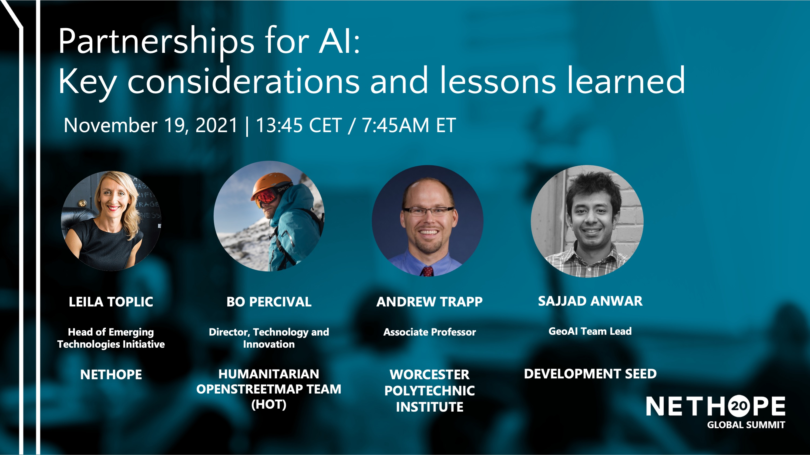
Panel Session at NetHope Global Summit 2021
November 8, 2021
I am serving as a panelist on Friday November 19 at the (virtual) 2021 NetHope Global Summit for a panel session on nonprofits and partnerships in AI and technology. I will speak about our successful partnership with HIAS and soon-to-graduate WPI Data Science PhD student Narges Ahani on the development of Annie™ MOORE, the world's first refugee resettlement software that uses machine learning and optimization to recommend placements of refugees to communities. I will be joined on the panel by Bo Percival from Humanitarian OpenStreetMap and Sajjad Anwar from Development Seed. Many thanks to Leila Toplic at NetHope for organizing this session and to the National Science Foundation (award number 1825348) for supporting the associated research.
NetHope Global Summit 2021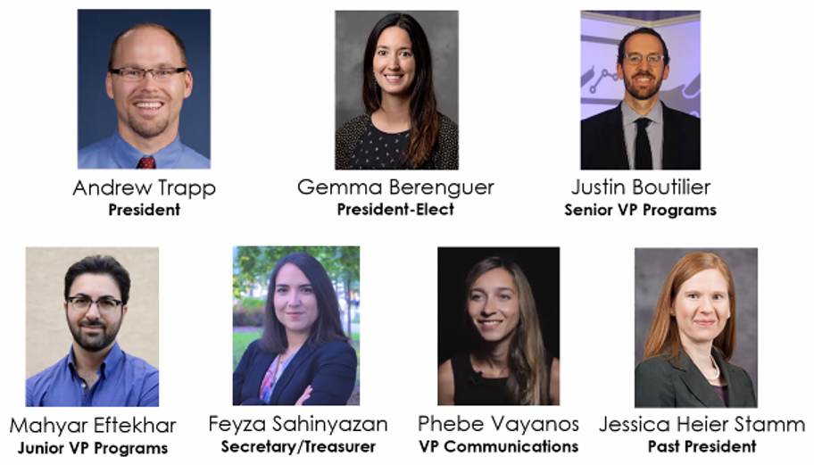
President, INFORMS Public Sector Operations Research (PSOR)
October 27, 2021
I am now serving as President for the INFORMS Section on Public Sector Operations Research (PSOR), which was announced at the recent PSOR Business Meeting associated with INFORMS Annual Conference. PSOR is the INFORMS subdivision dedicated to, in the words of the INFORMS slogan, "doing good with good OR." It is an honor to serve with these outstanding individuals who each are doing terrific work to elevate operations research and analytics in the public sector.
INFORMS PSOR Home
New Manuscript!
A Reformulation Technique to Solve Polynomial Optimization Problems with Separable Objective Functions of Bounded Integer Variables
August 2, 2021
Excellent PhD student Pitchaya Wiratchotisatian and I recently submitted a manuscript "A Reformulation Technique to Solve Polynomial Optimization Problems with Separable Objective Functions of Bounded Integer Variables." We explore novel reformulations of a class of polynomial integer optimization problems having separable objective functions of bounded integer variables. I particularly like this work due to an algebraic identity we leverage to reformulate polynomial functions of bounded integer variables into integer linear expressions that are amenable to integer optimization solvers. And it works! We demonstrate strong performance on fairly large test instances. Hope you enjoy reading!
Read More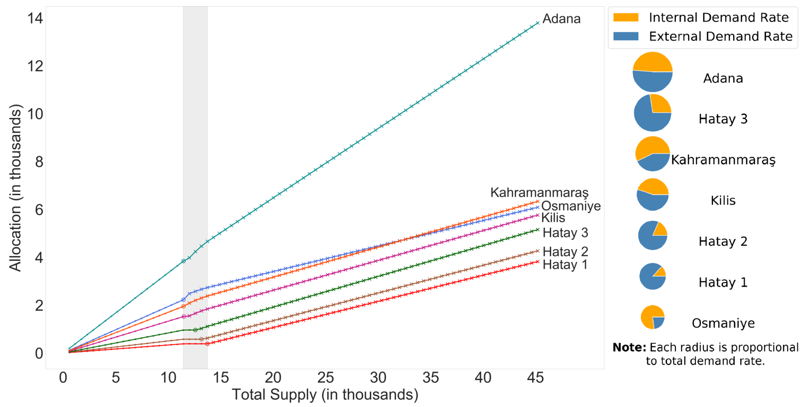
Accepted: Production and Operations Management
Aid Allocation for Camp-Based and Urban Refugees with Uncertain Demand and Replenishments
June 30, 2021
A recent manuscript has been accepted at Production and Operations Management (FT Top 50 Outlet!) on how to efficiently allocate aid to refugee camp systems under uncertainty, coauthored with senior WPI Operations PhD candidate Shima Azizi, as well as Ozyegin PhD student Cem Deniz Caglar Bozkir, Ozyegin Professor O. Erhun Kundakcioglu, and Northwestern PhD student Ali Kaan Kurbanzade. We are grateful to the thoughtful comments of the editorial team that improved the paper, as well as National Science Foundation Operations Engineering program for their support of this research (award number 1825348).
A link to a preprint is here, as well as the link to the online version at POM here.
Read PreprintRefugee Job Placement Research Featured by WPI President Laurie Leshin at 2021 Commencement
May 21, 2021
It's so rewarding to see the great work of students be recognized! Newly graduated WPI IE senior Johanna (Joey) Whitwell was given a shout out by Worcester Polytechnic Institute President Laurie Leshin at the 2021 commencement ceremony. Joey was featured for her work with me in developing methods to match refugees to safe, stable employment options in Mexico City with amazing social startup INTRARE.
Watch Clip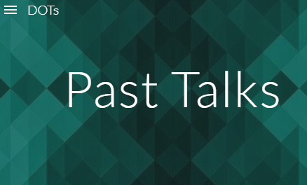
Recent Talk | Talk at DOTs Series Now Available
April 19, 2021
Aleksandr Kazachkov and Elias Khalil are doing an amazing job of organizing the Discrete Optimization Talks (DOTs) series. There are a number of really great talks in the DOTs series, and I'm honored to be among them! My recent talk on new stability representations for many-to-one matching via integer optimization, which is joint work with great colleagues Pitchaya Wiratchotisatian and Hoda Atef-Yekta, is now up at here, where you can also see all of the previous talks in the series.
Link to DOT Talk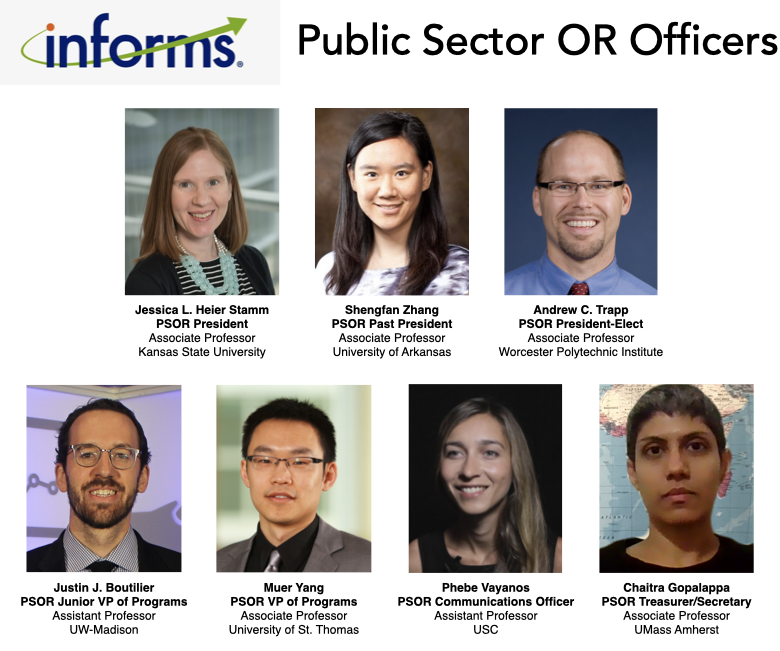
President-Elect of the INFORMS Section on Public Sector Operations Research (PSOR)
April 19, 2021
I have the honor of serving as President-Elect for the INFORMS Section on Public Sector Operations Research (PSOR). We are the INFORMS subdivision dedicated to, in the words of the INFORMS slogan, "doing good with good OR." Here are all of this year's officers, with a hat tip to Phebe Vayanos who assembled the figure and is serving as the PSOR Communications Officer.
PSOR Officers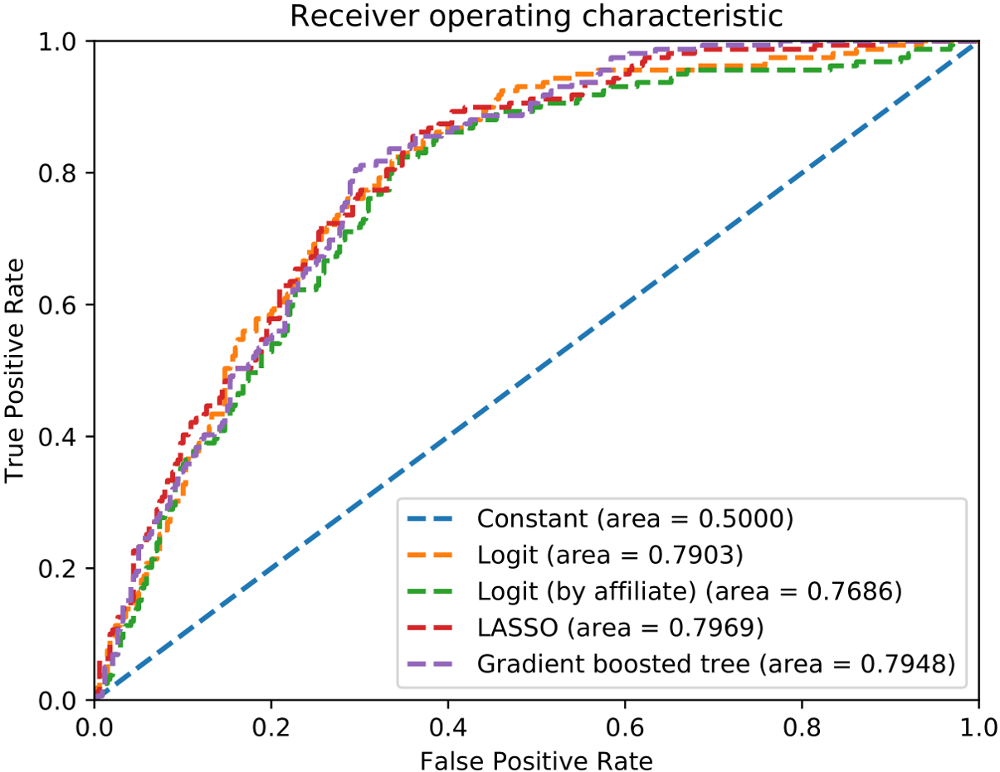
Available at Operations Research, Articles in Advance: Placement Optimization in Refugee Resettlement Paper
March 24, 2021
Our manuscript Placement Optimization in Refugee Resettlement with outstanding colleagues and WPI Data Science PhD student Narges Ahani, Tommy Andersson, Alessandro Martinello, and Alex Teytelboym is now available online at Operations Research. We use analytics, specifically integer optimization and machine learning, to improve refugee resettlement. Our paper includes a case study with the US resettlement agency HIAS where we deploy Annie™ MOORE, the software tool we develop and describe that can sort through vast refugee-host matching possibilities to optimize integration outcomes. We are grateful to the National Science Foundation Operations Engineering program for their support of this research (award number 1825348).
Download Preprint
Among Chief Data Officer (CDO) Magazine's
2021 list of Academic Data Leaders
January 5, 2021
I recently learned that I am among this year's list of Academic Data Leaders at Chief Data Officer Magazine. Certainly an honor! Thank you, CDO Magazine.
Read More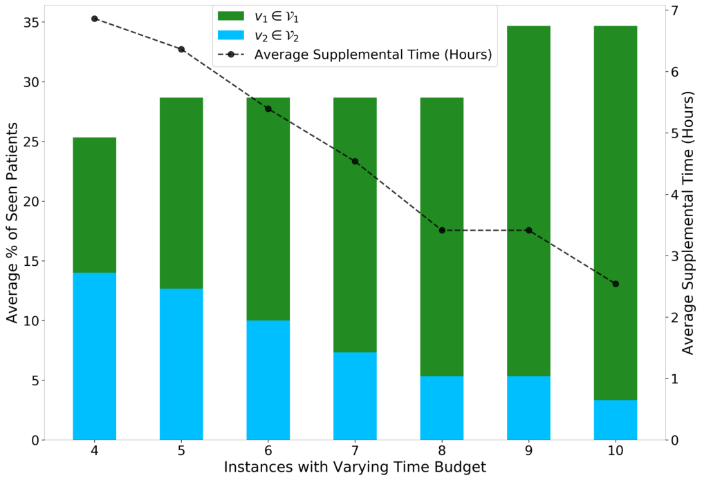
On Optimization Online: Optimizing Community Paramedicine Service Delivery with Mandatory Visits and Patient Prioritization
December 10, 2020
Here is a recent technical report posted to Optimization Online on community medicine: how to select, route, and schedule medical workers to visit patients in the community. This research was led by WPI Operations PhD student Shima Azizi, in collaboration with Brenton Faber, Sharon Johnson, Renata Konrad, and myself. This study is the first optimization-based framework for programmatically operating community paramedicine and derives insights into the model's behavior by conducting comprehensive analytical experiments on test instances based on real data. We are grateful to WPI's Healthcare Delivery Institute for their support.
Read More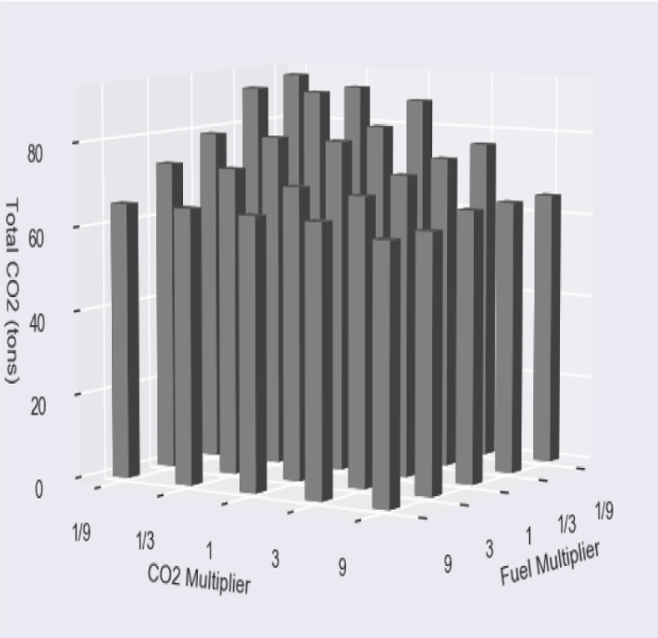
New Manuscript
Maritime Container Shipping: Does Coopetition Improve Cost and Environmental Efficiencies?
August 26, 2020
Recently published paper at Transportation Research Part D with excellent colleagues Irina Harris and Vasco Sanchez Rodrigues at Cardiff Business School, as well as Joe Sarkis at WPI. We study the effects of coopetition in maritime logistics, specifically container shipping. Using realistic data from two major retailers, we develop a novel integer optimization model that allocates goods to containers, and containers to vessels, in a manner that minimizes both traditional economic costs as well as environmental costs, and provide analyses and insights. We believe our research sets the stage for future investigations.
Read More
New Manuscript
Responsible Anti-Human Trafficking Research in Operations And Analytics
July 1, 2020
A nice opinion piece about how to conduct responsible anti-human trafficking research in operation and analytics, with excellent colleagues R. A. Konrad and K. Maass. Very grateful for the support of the National Science Foundation Operations Engineering program (award numbers 1841893 and 1935602).
Download from arXiv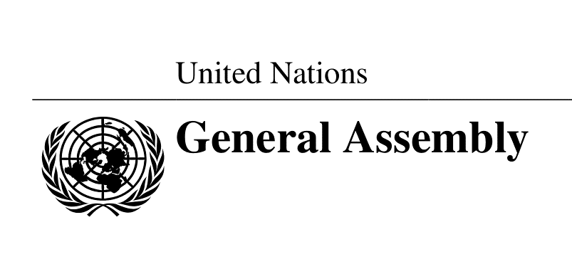
United Nations Report Mentions Anti-Human Trafficking Work
May 26, 2020
A recent UN report describes in its "Anti-Slavery Agenda of Tomorrow" section some recent work with K. Maass and R. A. Konrad. It reads Computational analysis may be useful to this end, for example in optimizing resource allocation to ensure maximum social impact. We are grateful for the support of the National Science Foundation Operations Engineering program (award number 1841893).
Download Report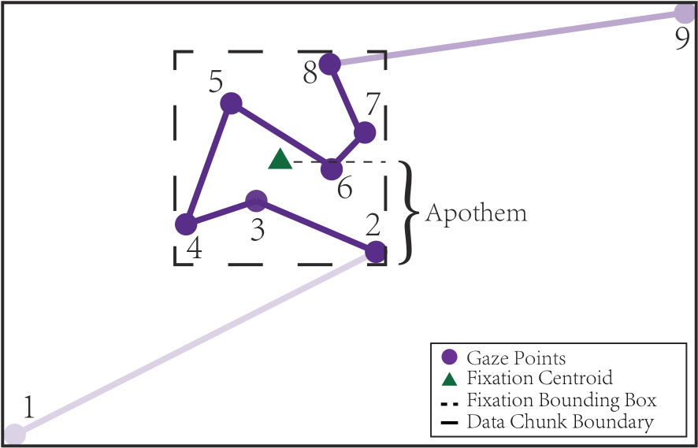
New! Outlier-Aware, Density-Based Gaze Fixation Identification
June 30, 2020
A recently accepted manuscript is now available online at Omega: W. Liu, A. C. Trapp, S. Djamasbi, "Outlier-Aware, Density-Based Gaze Fixation Identification," available online, Omega, 2020.
Read Preprint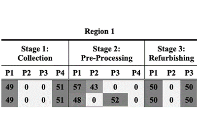
Closing the Loop: Forging High Quality Agile Virtual Enterprises in a Reverse Supply Chain via Solution Portfolios
Available online May 12, 2020
A recent manuscript was published and is now available online at JORS:
A. C. Trapp, R. A. Konrad, J. Sarkis, Amy Z. Zeng, Closing the Loop: Forging High Quality Agile Virtual Enterprises in a Reverse Supply Chain via Solution Portfolios, Journal of the Operational Research Society, 2020.
A link to a preprint is here, or download one of 50 free copies from JORS here.
Read Preprint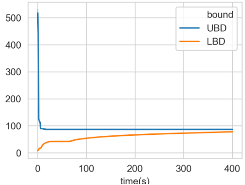
On arXiv: New Technical Report on Maximum A-Posteriori (MAP) Clustering via mixed-Integer Nonlinear Optimization
April 1, 2020 (No Fooling!)
Here is a recent preprint joint with excellent coauthors Pat Flaherty (UMass Amherst), WPI Data Science PhD student Pitchaya Wiratchotisatian, UMass Amherst PhD student Ji Ah Lee, and UMass Amherst PhD student Zhou Tang on solving the maximum a-posteriori (MAP) clustering problem under the Gaussian mixture model. We develop exact approaches to solve this problem using mixed-integer nonlinear optimization techniques.
Read More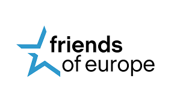
Policy Article at Friends of Europe Think Tank
March 26, 2020
Here is a recent policy article by esteemed colleague Tommy Andersson urging the European Union to adopt AI-based matching of refugees to host communities. Tommy is a key collaborator on Annie™ MOORE, our software tool that can sort through vast refugee-host matching possibilities to optimize integration outcomes.
Read MoreAnnie™ MOORE Video
February 20, 2020
Here is a short video explaining the highlights of our refugee resettlement software tool Annie™ MOORE. More info at our refugees.ai website.
Watch here!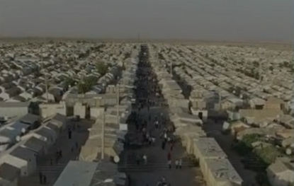
Coverage in Forbes Magazine
January 16, 2020
Forbes Magazine recently featured an article with a vignette on joint work with terrific colleagues Alex Teytelboym, Alessandro Martinello, Tommy Andersson, and WPI Data Science PhD student Narges Ahani on using analytics to improve refugee resettlement. We appreciate the attention to detail, as they note that our matching software Annie™ MOORE recommends match outcomes, that can then be fine-tuned by resettlement decision-makers. The associated technical report can be found at this link. We are grateful to the National Science Foundation (NSF), especially the Operations Engineering program, for their support of this research.
Read More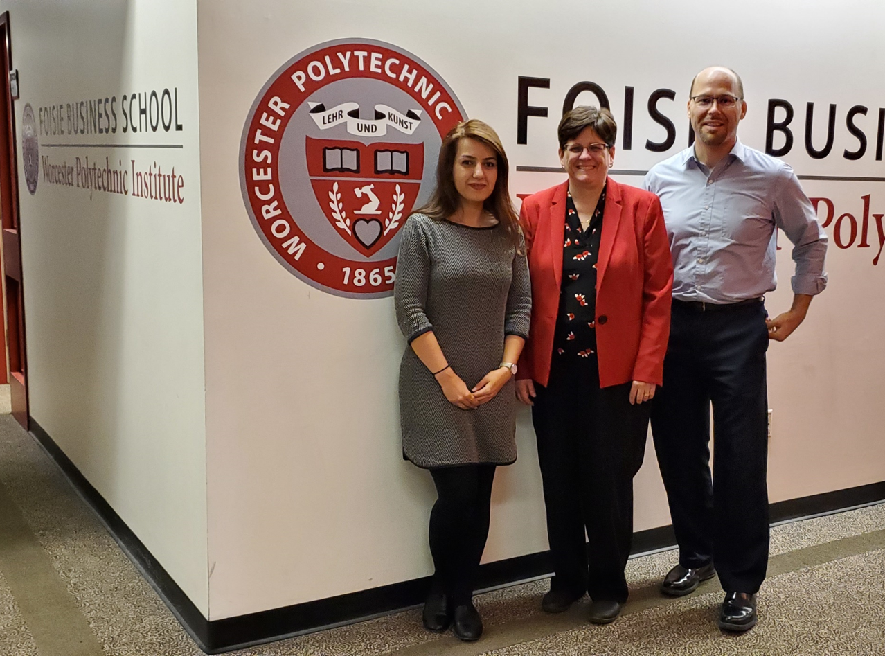
PhD Student Shima Azizi Passes Qualifying Exam!
December 13, 2019
Good news: PhD student Shima Azizi passed her qualifier this week! We are all very proud of her hard work on the topic of improving efficiency in community paramedicine. I'm grateful for both committee members, Prof. Michael Ginzberg and Prof. Sharon Johnson (pictured), as well as Prof. Brent Faber and Prof. Renata Konrad, for their support.
Read MoreOR Seminar: Placement Optimization in Refugee Resettlement with Andrew C. Trapp
November 27, 2019
I had the privilege of visiting the University of Toronto and speaking in their Operations Research Seminar on refugee resettlement research, joint with colleagues Narges Ahani, Tommy Andersson, Paul Gölz, Alessandro Martinello, Ariel Procaccia, and Alex Teytelboym. Thanks to Tim Chan for the invitation!
Read MoreFabulous Talk on Refugee Resettlement Optimization in Our UMass Amherst INFORMS Speaker Series
September 30, 2019
Had the opportunity to present on placement optimization in refugee resettlement at the INFORMS Speaker Series of the Isenberg School of Management, University of Massachusetts Amherst. This is joint work with Alex Teytelboym, Alessandro Martinello, Tommy Andersson, and Narges Ahani.
Read MoreLightning Talk at WPI Arts & Sciences Week 2019
September 16, 2019
Here is a short video clip of my lightning talk presentation for the "Global Impact: The Latin American Experience" series at WPI's 2019 Arts & Sciences Week. My talk was entitled: Developing Data-Informed Holding and Judicial Capacity Levels for Asylum Seekers at the Southern Border.
Watch here!Andrew Trapp: Conversation with the President
September 13, 2019
Had the privilege of speaking with Laurie Leshin, President of WPI, about the work of my research team and I in improving refugee resettlement matching, as well as matching WPI students to project centers.
Read MoreISN2: Disrupting Human Trafficking via Needs Matching and Capacity Expansion
Jan. 2020 through Dec. 2022
R. A. Konrad (PI), A. C. Trapp (co-PI), M. Dank (co-PI), K. Maass (co-PI), NSF (Operations Engineering) award "ISN2: Disrupting Human Trafficking via Needs Matching and Capacity Expansion," Research award CMMI-1935602
Read MoreOptimizing Placement of Residential Shelters for Human Trafficking Survivors
Available online August 3, 2019
K. Maass, A. C. Trapp, R. A. Konrad, "Optimizing Placement of Residential Shelters for Human Trafficking Survivors" accepted for publication, Socio-Economic Planning Sciences, 2019.
Read MoreMatching Problems in Refugee Resettlement
Aug. 2019 through Aug. 2020
A. C. Trapp, NSF (Operations Engineering) supplement award to "Matching Problems in Refugee Resettlement," Research award CMMI-1825348: "Extension of Immigration Study to Operational Challenges at the United States Southern Border,"
Read MoreA Global Optimization Algorithm for Sparse Mixed Membership Matrix Factorization
First online July 09, 2019
F. Zhang, C. Wang, A. C. Trapp, P. Flaherty, A Global Optimization Algorithm for Sparse Mixed Membership Matrix Factorization, New Advances in Statistics and Data Science, ICSA Book Series in Statistics, Springer, pp. 129-156, 2019.
Read MoreMETU Seminar: Placement Optimization in Refugee Resettlement by Andrew C. Trapp
May 24, 2019
I had the privilege of visiting Middle Eastern Technical University (METU) and giving a seminar to their IE group on refugee resettlement research, joint with colleagues
Narges Ahani,
How Technology Could Revolutionize Refugee Resettlement
April 26, 2019
The Atlantic covered our research on using integer optimization and machine learning to improve refugee resettlement
Read MoreEAGER: ISN: A Data Analytic Approach to Understanding Human Trafficking Networks
Aug. 2018 through Aug. 2019
R. A. Konrad (PI), A. C. Trapp (co-PI), M. Dank (co-PI), K. Maass (co-PI), NSF (Operations Engineering) award "EAGER: ISN: A Data Analytic Approach to Understanding Human Trafficking Networks," Research award CMMI-1841893
Read MoreEnriching Solutions to Combinatorial Problems via Solution Engineering
2019
T. Petit, A. C. Trapp, "Enriching Solutions to Combinatorial Problems via Solution Engineering" published online, INFORMS Journal on Computing, 2019
Read MoreIdentifying Fixations in Gaze Data via Inner-Density and Optimization
April 26, 2019
A. C. Trapp, W. Liu, S. Djamasbi, "Identifying Fixations in Gaze Data via Inner-Density and Optimization" published online, INFORMS Journal on Computing, 2019.
Read MoreDetecting Task Demand via an Eye Tracking Machine Learning System
Decision Support Systems Volume 116,January 2019, Pages 91-101
M. Shojaiezadeh, S. Djamasbi, R. Paffenroth, A. C. Trapp, "Detecting Task Demand via an Eye Tracking Machine Learning System" Decision Support Systems, Vol. 116, pp. 91-101, 2019.
Read MoreRefugee Resettlement via Machine Learning and Integer Optimization
Keynote Presentation and Paper for OR60 Annual Conference, Lancaster, UK, 2018
A. C. Trapp, A. Teytelboym, N. Ahani, T. Andersson, "Refugee Resettlement via Machine Learning and Integer Optimization," Keynote Presentation and Paper for OR60 Annual Conference, Lancaster, UK, 2018.
Read MoreOvercoming human trafficking via operations research and analytics: Opportunities for methods, models, and applications
European Journal of Operational Research Volume 259, Issue 2, 1 June 2017, Pages 733-745
R. A. Konrad, A. C. Trapp, T. Palmbach, J. S. Blom, "Overcoming Human Trafficking via Operations Research and Analytics: Opportunities for Methods, Models, and Applications," European Journal of Operational Research, Vol. 259 (2), pp. 733-745, 2017.
Derivative works of the above article include:
- Data Science Can Help Us Fight Human Trafficking, The Conversation, Scientific American, PBS Newshour
- Human Trafficking Analysis, Informs.org